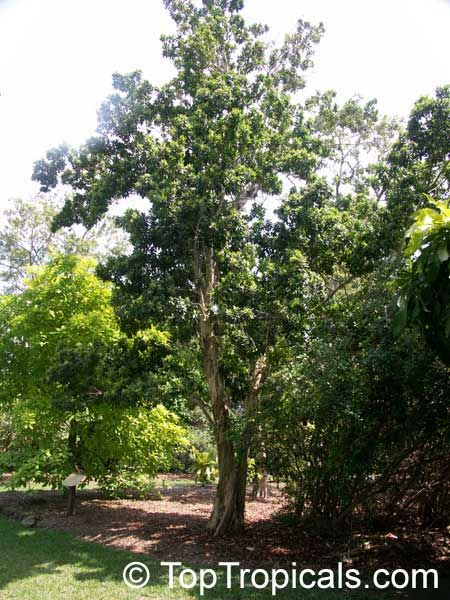

Pimenta Dioica
Allspice, also known as Jamaica pepper, myrtle pepper, pimenta, or pimento,[a] is the dried unripe berry of Pimenta dioica,
a midcanopy tree native to the Greater Antilles, southern Mexico, and Central America, now cultivated in many warm parts of the world.
The name allspice was coined as early as 1621 by the English, who valued it as a spice that combined the flavours of cinnamon, nutmeg, and clove.
Several unrelated fragrant shrubs are called "Carolina allspice" (Calycanthus floridus), "Japanese allspice" (Chimonanthus praecox), or "wild allspice" (Lindera benzoin).